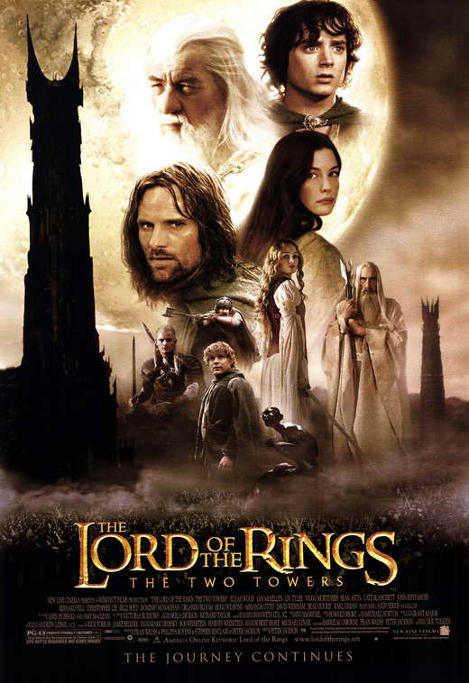

Welcome, {{ session['username'] }}! Logout
{% endif %}{{ current_datetime }}
This is the second movie in the Lord of the Rings trilogy. It was released in 2002.
The Fellowship of the Ring is scattered. Frodo and Sam meet an unwelcome creature; Aragorn, Legolas, and Gimli join forces with the horse lords of Rohan to defend Middle Earth against the growing army of Saruman. Merry and Pippin, previously captured by Uruk-hai, encounter the Ents, ancient tree shepherds of Fangorn Forest.
You can buy/rent the movie on:
The Fellowship of the Ring The Return of the King Home